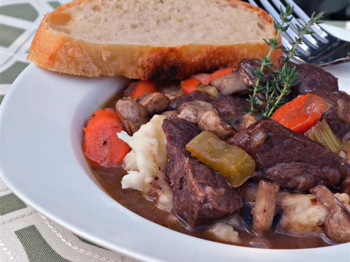

Beef-Bourguignon-without-the-Burgundy

This Beef bourguignon recipe made with Merlot is one of my favourites and a take-off on venerable French dish of beef braised in Burgundy wine.Serve over mashed potatoes.
Ingrdients
- 1 (2 1/2 pound) boneless beef chuck roast, cut into 2-inch cubes
- salt and freshly ground black pepper to taste
- 2 tablespoons vegetable oil
- 1 onion ,chopped
- 1 tablespoon butter
- 2 tablespoons flour
- 2 cups Merlot wine
- 2 cups beef broth
- 2 carrots cut into 1-inch pieces
- 2 stalks celery, cut into 1/2-inch pieces
- 4 spring fresh thyme
- 1 bay leaf
Steps
- Generouly season beef with salt and pepper
- Heat oil in a large Dutch oven over high heat. Cook and stir beef in hot oil until browned on alll sides, 10 to 15 minutes.Use a slotted spoon to transfer meat to a plate
- Cook and stir onion ,butter and a pinch of salt in frippings in the Dutch oven until onion begins to sweat.Stir in flour;cook and stir until onion starts to soften ,3 to 4 minutes.Pour in wine;bring to a simmer and cook until wine is reduced by half,about 10 minutes.
- Return beef and any accumulated juices to the Dutch oven.Add broth,carrots,celery,thyme sprigs,and bay leaf,season with salt.Bring to a simmer,cover the pot with a lid, and cook over low heat until meat is almost tender ,about 1 hour 30 minutes.
- Remove the lid and continue cooking at a simmer until meat is tender and stew is thick ,about 30 minutes more. Season with salt and pepper.